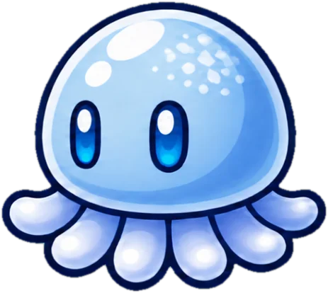

 WaterIce
WaterIceTap a stage to read its story.
Gelkin bobs through the murky waters of Poison Marsh like a tiny blue lantern, its round translucent bell lit from within by a soft watery glow. Its short tentacles trail behind it in little loops, too stubby to sting but perfect for feeling texture - it presses them against every surface it encounters as if taking notes. Despite the marsh's toxic reputation, Gelkin is completely immune to the mild poisons dissolved in the water, filtering them through its bell and releasing them as harmless cold vapor. Small marsh fish shelter in the chill beneath it.
Field note: Gelkin's bell pulses exactly twelve times per minute regardless of temperature - researchers use it as an underwater clock.
Poison Marsh. Gelkin and its family are found in the Poison Marsh. See everyone who lives there.
Share a Bond Food that matches its types to become friends. Gelkin loves:
A Bond Food is not a trick. It joins your spirit with the Kimuro's spirit, and only when it chooses you.
Print the Kimuro adventure packs: mazes, cards, a board game and Bond Mark medals.
See the printable packs